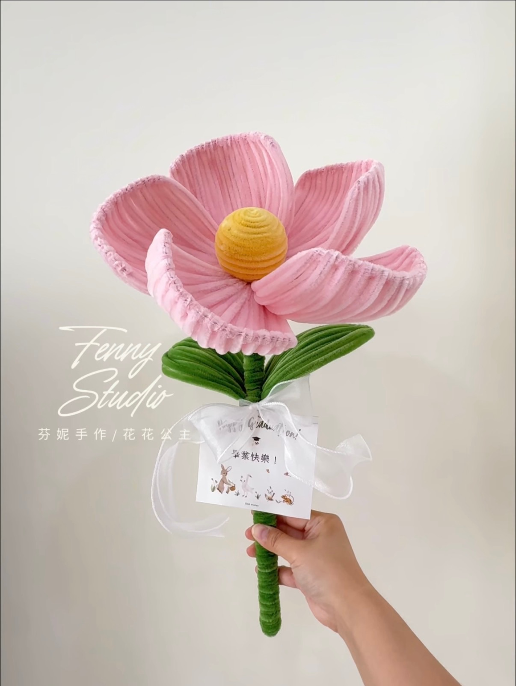

芬妮手作是一間以「毛根手作」為主的小小工作室。
我們相信，手作不只是完成一個作品，而是把心意與溫度，一針一線地放進去。
從零基礎也能上手的課程，到細膩精緻的訂製作品，讓更多人享受動手做的快樂。

芬妮手作是一間以「毛根手作」為主的小小工作室。
我們相信，手作不只是完成一個作品，而是把心意與溫度，一針一線地放進去。
從零基礎也能上手的課程，到細膩精緻的訂製作品，讓更多人享受動手做的快樂。
活動介紹、材料認識與今日成品搶先看。
示範毛根纏繞與塑形，跟著做完成第一個部分。
運用學到的技巧，獨立完成自己的作品。
細節調整與最後修飾，完成專屬作品。